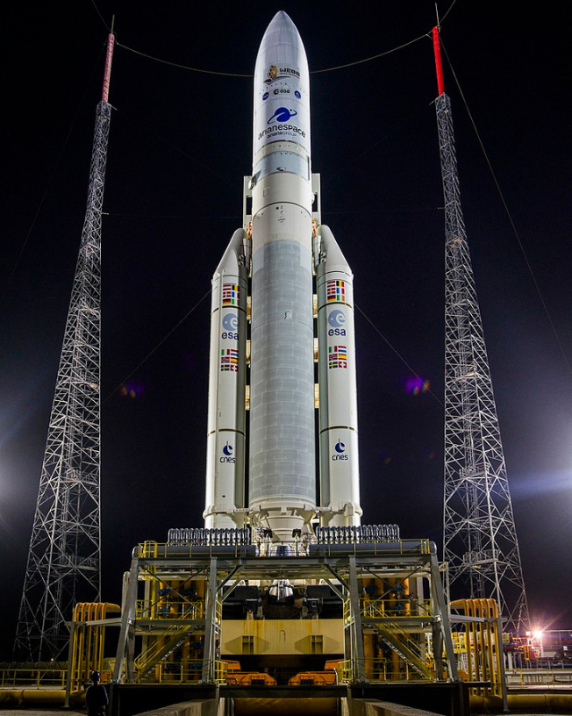
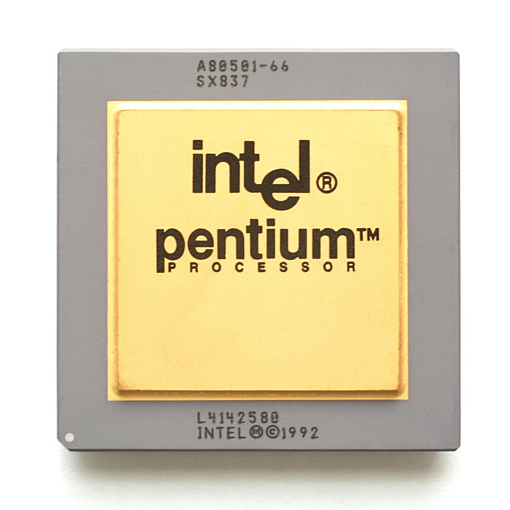
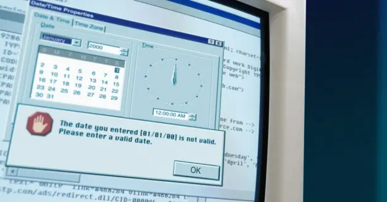

Ariane 5 Flight 501 - $370 million
In June 1996, the European Space Agency launched flight 501 of the rocket Ariane 5. It was supposed to deliver payloads into orbit. The Ariane 5 was reusing old software from Ariane 4. While converting data and storing them in variables, horizontal acceleration went higher than the system could process and the computers crashed. It was unprotected because Ariane 4 couldn't possibly manage to reach values that high. The rocket went off its path, and eventually was self-destructed 37 seconds after launch. The failure resulted in a loss of more than $370 million dollars.
Knight Capital Group Stocks Trading Bug - $440 million
Knight Capital Group was a big trading company. In August 2012 they upgraded trading software. Unfortunately there was a glitch in the new software. In about 30 minutes the company lost over 440 million dollars. This is not counting their stocks that went down by 75% in the next two days due to this. It was the end of Knight Capital Group.

Intel Pentium FDIV bug - $475 million
In 1994, an error in the Pentium processor chip caused minor miscalculation when dividing floating numbers after 4 or 5 decimal points. While bug was very rare and wouldn’t have affected the majority of people, after information got into the media people started claiming replacements. Intel estimated losses in around 475 million dollars.
EDS Child Support System for the UK’s CSA - $1 billion
In 2004 the UK government started to use a new complex system to manage the operations of the Child Support Agency. This system was implemented by the EDS company. There were major problems with processing cases through this system because of several software problems. All this eventually ended up costing UK’s taxpayers around 1 billion dollars.
Year 2000 Bug - $500 billion
Y2K problem is a bug across multiple software systems that instead of year stored only 2 last digits. Originally it was used to save memory, but problems appeared when the century changed, because the first 2 digits weren't stored and computers couldn't distinguish the 20th century from the 19th. This could possibly lead to global disaster, but because of massive effort that was put into fixing bug before year 2000 nothing really bad didn’t happen. Cost of fixing this error across all systems is estimated at roughly 500 billion dollars.
